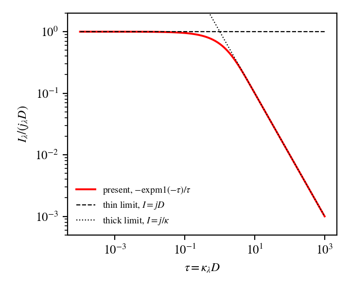

Radiative transfer
The radiators (Atomic bound-bound lines, Diatomic band systems, line by line, Continuum radiation) give, in each cell, the spectral emission coefficient \(j_\lambda\) [W m-3 sr-1 m-1] and the spectral absorption coefficient \(\kappa_\lambda\) [m-1], summed over all species and processes. The transport model turns these local coefficients into the quantity that is measured or that leaves the gas: a spectral radiance \(I_\lambda\) [W m-2 sr-1 m-1].
radiationFoam has two transport models, selected by the entry mode
of system/radiationProperties
(src/radiation/transport, Transport classes):
singleCell: one cell, no transfer;shockTube1D: the cells of a 1-D shock-tube profile, each a uniform slab across the tube.
The application radiationFoam
(applications/solvers/radiationFoam/radiationFoam.C) builds the
radiating species, the population model and the continuum processes,
selects the transport model by mode and calls its solve(). It
runs in serial (argList::noParallel).
The radiative transfer equation
Along a ray of direction \(\mathbf{s}\), a beam gains energy by emission and loses energy by absorption:
Scattering is neglected (a good approximation for a gas). Here \(\kappa_\lambda\) is net of stimulated emission: the induced emission, proportional to \(I_\lambda\) like the absorption, is counted as a negative absorption. In a medium of uniform \(j\) and \(\kappa\), the ratio \(S_\lambda = j_\lambda/\kappa_\lambda\) is the source function; in local thermodynamic equilibrium it is the Planck function \(B_\lambda(T)\).
Uniform slab
For a uniform layer of thickness \(D\) with no radiation entering it (\(I_\lambda = 0\) at \(s = 0\)), the equation integrates to
Its two limits, with the optical thickness \(\tau = \kappa_\lambda D\):
optically thin, \(\tau \ll 1\): \(I_\lambda \to j_\lambda D\). Every photon emitted in the layer reaches the observer;
optically thick, \(\tau \gg 1\): \(I_\lambda \to j_\lambda/\kappa_\lambda\). The observer sees only the last \(1/\kappa_\lambda\) of the layer, and in equilibrium the radiance saturates at the black body \(B_\lambda(T)\).
The code evaluates the slab formula with std::expm1. For small
\(\tau\) the naive form \(1 - e^{-\tau}\) loses its digits to
round-off (relative error 2e-5 at \(\tau = 10^{-12}\), 11 % at
\(10^{-16}\), by the script below), while -expm1(-tau) is
accurate to round-off for every \(\tau > 0\). \(\kappa = 0\)
exactly gives \(I = jD\). A negative \(\kappa\) (gain, an
inverted pair of levels) is kept: the same formula then gives
\(I = (j/|\kappa|)(e^{|\kappa|D} - 1) > jD\).


Figure 1. Slab radiance over its optically thin value,
\(I_\lambda/(j_\lambda D) = -\mathrm{expm1}(-\tau)/\tau\)
(present), and its thin and thick limits. Script:
_static/figures/transport/fig_slab.py.
singleCell: emission and absorption of one cell
singleCell computes \(j_\lambda\) and \(\kappa_\lambda\) of
one cell state on one spectral grid and writes them
(postProcessing/radiationFoam/spectrum.csv) with the level
populations. It performs no transfer: the cell is a point. It
is the mode for checking the spectral coefficients against a baseline
code or a hand calculation, and for building the coefficients that a
user then integrates over a path of their choice. The log reports, per
species and process, the emitted power
\(4\pi\int j_\lambda\,\mathrm{d}\lambda\) [W m-3] and
\(\int\kappa_\lambda\,\mathrm{d}\lambda\) over the window. The
optically thin radiance of a uniform layer of thickness \(D\) is
\(j_\lambda D\); the slab formula above applies with the written
\(\kappa_\lambda\).
shockTube1D: radiance across a shock tube
Geometry
In a shock-tube experiment such as EAST (Brandis and Cruden 2017) a camera looks across the tube, perpendicular to its axis, through windows in the tube wall, and images the radiance as a function of the position \(x\) along the axis. The flow behind the shock is, to a first approximation, one-dimensional: its state depends on \(x\) only.
shockTube1D takes a 1-D profile of cell states along \(x\) (a
DSMC solution or a macro file, Profile classes) and treats
every cell as an independent uniform slab of thickness \(D\),
the tube diameter (entry diameter). At each wavelength of each
spectral window:
This is the line-of-sight radiance through the tube at the axial position of cell \(k\), under three assumptions:
the gas is uniform across the tube along the line of sight (no boundary layer at the walls, no radial variation);
no radiation enters the line of sight at the far wall: the walls neither emit nor reflect;
there is no transfer between cells along the tube: a photon emitted in one cell is not absorbed by its neighbours. The radiance of cell \(k\) depends only on the state of cell \(k\).
The line of sight is a diameter of the tube, so \(D\) is its full length; the chord of a ray off the axis would be shorter, and is not modelled.
Mapping the profile onto the tube
The profile cells are sorted by increasing \(x\)
(shockTubeProfile) and numbered \(k = 0 \dots N-1\) in that
order. Each cell gives the number density and the translational,
rotational, vibrational and electronic temperatures of every radiating
species, \(n_e\) and \(T_e\); with populationModel
boltzmannTemperatures the level populations are the Boltzmann
re-expansion of these temperatures (Level populations).
With populationModel cellDistribution the level populations come
instead from the per-cell distribution files written by the DSMC
function object dsmcRadiationDistribution (directory with an index
cells and files cell<k>; Coupling with dsmcFoam). Each
distribution cell is matched to the nearest profile cell along the
tube (component direction of its cell centre), within a tolerance of
matchTolerance (default 1e-3) times the smallest profile cell
spacing; that profile cell gives the translational temperatures, the
densities and the electrons used by the line shapes. The cell index
\(k\) is then that of the distribution file.
The position of the shock is not changed: \(x\) is the coordinate of the DSMC case or macro file. The shock front, and the distance behind it, are determined only by the optional instrument model, which finds \(x_0\) from the measured band profile or takes a fixed position (Instrument model: reproducing a shock-tube measurement).
Band and window integrals
For each cell, the radiance is integrated over each band \([a, b]\)
(entry bands, in nm) and over each whole window by the rectangle
rule on the grid points:
a grid point on a band edge (within \(10^{-6}\Delta\lambda\)) being inside the band. With the bin placement of the lines (Line shapes and broadening), a point stands for the bin \((\lambda_{i-1}, \lambda_i]\). The emitted power \(4\pi\sum_i j_\lambda\,\Delta\lambda\) [W m-3] of each window is written as well.
The measured quantities of EAST (instrument line shape, spatial resolution, shock-front criterion, nonequilibrium metric) are applied to this raw radiance field after the cell loop by the instrument model (Instrument model: reproducing a shock-tube measurement); the raw outputs are unchanged.
Escape factor of a uniform cylinder (DSMC side)
The radiationFoam repository contains only the two transport models above: one-way (no feedback to the flow), with no transfer between cells. It contains no escape factor, photon Monte Carlo or ray tracing.
A local escape factor is implemented in the DSMC repository
(dsmcFoam+), in the radiative decay class spontaneousEmission
(src/lagrangian/DSMC/radiationCoupling/gasGasReactions/spontaneousEmission
there), where the radiative decay of the atomic levels removes energy
from the gas during the DSMC run. A photon emitted in a line can be
re-absorbed before it leaves the gas; the escape factor
\(\Lambda\) is the fraction that escapes, and the effective decay
rate of the line is \(\Lambda A\). The DSMC class takes
\(\Lambda\) for a uniform infinite cylinder of radius \(R\)
(the tube radius, entry radius of its escape dictionary):
the mean escape probability of photons emitted uniformly and isotropically in the cylinder, of absorption coefficient \(\kappa\),
\[P_\mathrm{cyl}(\tau_R) = \frac{2}{R^{2}}\int_0^R r\,\mathrm{d}r\; \frac{1}{\pi}\int_0^\pi \mathrm{Ki}_2\!\left(\kappa\,s(r,\varphi)\right) \mathrm{d}\varphi, \qquad \tau_R = \kappa R,\]with \(s\) the in-plane path to the wall and \(\mathrm{Ki}_2\) the Bickley function (the polar angle integrated); \(P_\mathrm{cyl}(0) = 1\) and \(P_\mathrm{cyl} \to 1/(2\tau_R)\) for large \(\tau_R\);
the line escape factor \(\Lambda(\tau_0, a)\), the integral of \(P_\mathrm{cyl}\) over the Voigt line profile, with \(\tau_0\) the optical radius at line centre and \(a\) the Voigt damping parameter, tabulated in
escapeCylinder.table.
The pure-geometry quadrature is
src/lagrangian/DSMC/radiation/database/sources/escape_cylinder.py
of the DSMC repository. The coupling design of the two codes (one-way
transport in 2-D and 3-D, the radiation-to-DSMC feedback) is described
in docs/RADIATION_COUPLING_SPEC.md of this repository; the parts of
it that are not listed above are plans, not code of radiationFoam. See
Coupling with dsmcFoam for what the two codes exchange today.
References
Brandis, A. M., Cruden, B. A. (2017). Benchmark shock tube experiments of radiative heating relevant to Earth re-entry. 55th AIAA Aerospace Sciences Meeting, Grapevine, TX, AIAA Paper 2017-1145. doi:10.2514/6.2017-1145